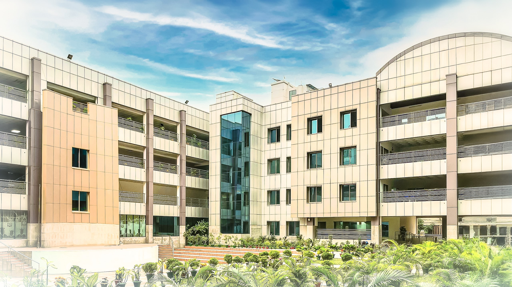

IUB At A Glance
Established in 1993, Independent University, Bangladesh (IUB) is a leading private university in Bangladesh with an explicit focus on research and global partnerships. With a current enrollment of around 12,000 at undergraduate and graduate levels, more than 450 highly qualified faculty members (47% of whom have PhD degrees), and an alumni strength of close to 18,000, IUB strives to ensure education for all to promote the national agenda of sustainable inclusive development.
Vision & Mission
VisionAspires to be a leading seat of learning and research for developing technologically competent, environmentally responsible, globally conscious future leaders with a strong liberal arts foundation.
Mission
Produce graduates with cutting-edge knowledge and transferable skills. Foster an environment to enhance research and innovation promoting sustainable development. Develop impactful partnerships through academia, industry and community engagement to contribute to the advancement of society.
IUB Campus
The IUB campus is spread over 3 acres, has an amphitheater, dedicated state-of-the-art laboratories for life, environmental and social sciences, and engineering. There are 95 multimedia classrooms that are fully-equipped for both physical and online classes. The IUB campus also hosts an auditorium, separate gymnasiums for men and women, swimming pool, yoga studio, chess and carrom-stations, table tennis court, spacious sports complex and a food court. There is also a dormitory for female students from outside Dhaka and a guest-house for visiting scholars.There is an amphitheater, dedicated state-of-the-art laboratories for life, environmental and social sciences, and engineering. There are a total of 95 multimedia classrooms fully equipped for both physical and online classes. The campus also hosts an auditorium, a 6,000 sq-ft modern gymnasium (with separate spaces for men and women), yoga studio, food court, spacious sports complex, and a swimming pool.
Accommodation
IUB has a secure dormitory for female students coming from outside Dhaka, foreign students, and a guesthouse for visiting scholars.
IUB Library
The IUB Library contains over 250,000 e-books and access to renowned resource hubs such as ABI Global (ProQuest), Cambridge University Press Journals, EBSCOhost, Emerald Journals, IEEEXplore, JSTOR Journals, Literary Encyclopedia, National Geographic, SpringerLink Journals, and so on.
Research
The faculty members of IUB are actively engaged in research and publish regularly in peer-reviewed journals. Along with conventional classroom-based teaching, students are engaged in research relatively early in their academic lives. IUB spent BDT 3.05 crore, BDT 4.31 crore and BDT 6.1 crore during the financial years 2020-21, 2021-22 and 2022-23 respectively, representing steady growth.